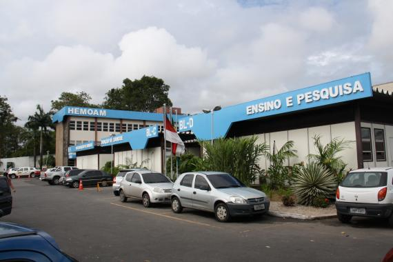
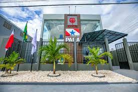
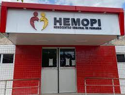
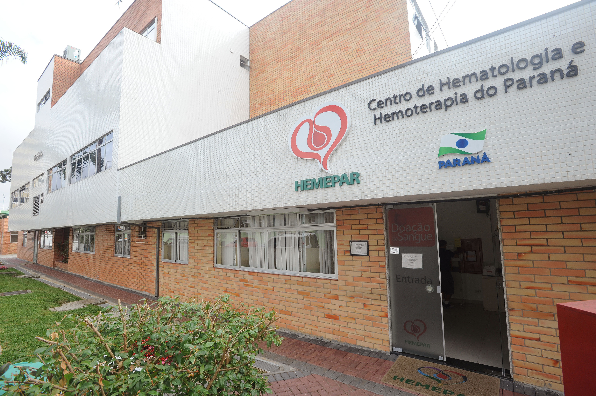

HEMOAM (Amazonas)



HEMAPÁ (Pará)

HEMOPI (Piauí)
HEMOCENTRO DE GOIÁS (Goiás)
FUNDAÇÃO HEMOMINAS (Minas Gerais)
HEMORIO (Rio de Janeiro)
HEMOCENTRO DE RIBEIRÃO PRETO (São Paulo)

HEMEPAR CURITIBA (Paraná)